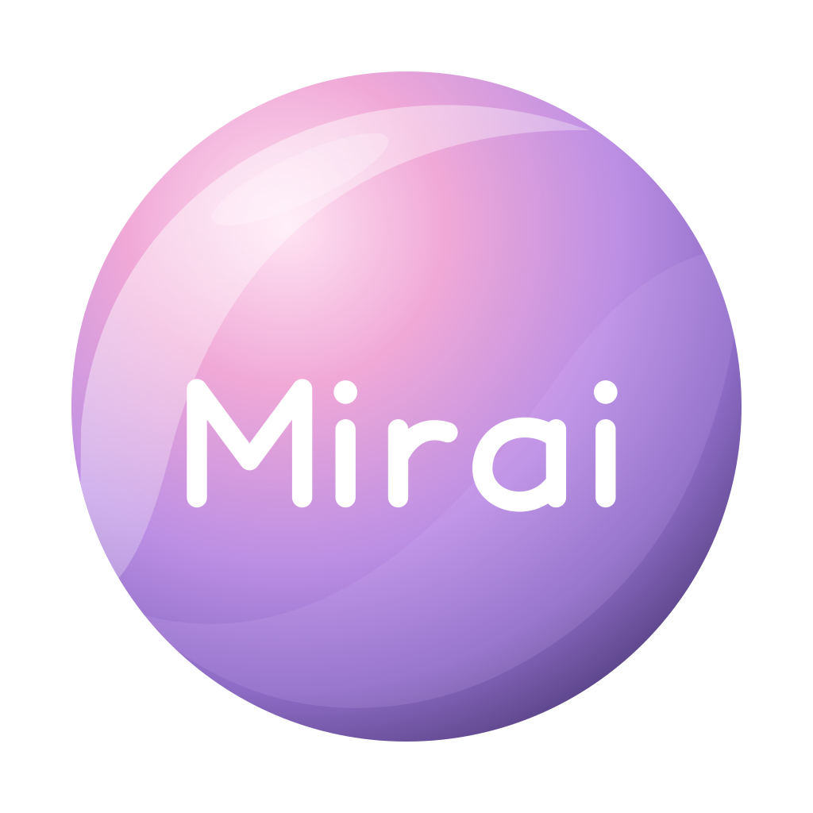

PDF
Mirai Reader
Un espacio para leer y trabajar con tus archivos PDF.
PróximamenteAún sin instalador público

MiraiLA FAMILIA MIRAI
Documentos, PDF, presentaciones y hojas de cálculo. Descubre los forks Mirai y descarga la aplicación que necesitas.
Explorar descargasPaquetes publicados · versiones por plataforma
Un espacio para leer y trabajar con tus archivos PDF.
Da forma a tus ideas, un documento a la vez.
Convierte tus ideas en una presentación.
Trabaja con tus datos, tablas y fórmulas.
El punto de encuentro de tus aplicaciones Mirai. Un launcher para instalar, actualizar y abrir la familia desde un mismo lugar.
Consulta las notas de cada versión para conocer sus requisitos y cambios.
En Windows x64, el MSI instala la aplicación y el ZIP es la versión portátil. Los paquetes RPM aquí listados se publicaron para Fedora x86_64. Solo se muestran los sistemas con paquetes disponibles.
Los paquetes de Windows y Fedora pueden publicarse por separado. Cada descarga muestra su versión exacta; una versión más nueva de Fedora no significa que exista también para Windows. Consulta todas las releases para ver el historial.
Son forks independientes mantenidos en los repositorios Mirai de mirasins. Reader deriva de PdfCraft, Words de WordCraft, Presentations de DeckCraft y Calc de GridCraft. El launcher deriva de ArtCraft Launcher. Los nombres originales de algunos archivos se conservan.
El asistente de las aplicaciones requiere Claude Code instalado y una sesión iniciada con tu propia cuenta. El resto de la aplicación puede utilizarse sin el asistente. Revisa los requisitos de la release elegida.
Los paquetes descargables aquí listados se publicaron sin firma de código. Windows puede mostrar una advertencia de SmartScreen. Comprueba el repositorio de origen y las notas de la versión antes de decidir si ejecutar el archivo.